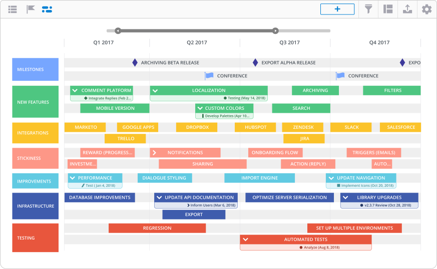

There isn't just one type of product roadmap. Product teams have a lot on the go — from managing a product or two (or three or four), coordinating feature launches and managing development / design resources. With this in mind, we created seven different product roadmap templates to help product teams stay on track.
Check ‘em out — you’ll definitely find one or two (or three or four) that will work for you and your team.
1. Product roadmap template
Let's start with the basics. This bread-and-butter product roadmap template illustrates a team's high-level product strategy. It includes upcoming features and technical considerations — while also demonstrating how a product will evolve over time.
Product teams can use this holistic iteration of a product roadmap to align executives and other departments on their long-term product vision.
Timeline: Use the Timeline view of the product roadmap template to chart how your product will grow over time. You can organize your tasks within key buckets — including new features, infrastructure and stickiness.

Swimlane: If you require more flexibility, use Swimlane to sort tasks based on progress, not time.
Try the product roadmap template and make it your own.
2. Portfolio roadmap template
For organizations that have more than one product on the market, the portfolio roadmap template is üëå. It provides a high-level overview of what's going on with the entire product line. Product managers can use this to show stakeholders how each individual product will evolve and how they all relate to each other.
Timeline: Use the Timeline view of the portfolio roadmap template to illustrate how how your family of products will hit the market and grow.
Swimlane: Swimlane provides a quick snapshot of how each part of your product line is progressing.
Try the portfolio roadmap template to illustrate how your product family will grow.
3. Product development roadmap
The product development roadmap template provides product teams with a tool that cleary communicates where a product is going — and it helps PMs align all stakeholders on the chosen direction.
This roamdap shows how a product will enter the market and compete in it — while ensuring cohesion and support across all stages of the product development process.
Timeline: The Timelane view turns your release plans, technical stories, design projects and marketing initiatives into a crystal-clear plan with set deadlines and deliverables.
Swimlane: Perfect for agile teams, the Swimlane view tracks the progress of your product development strategy.
Try the product development roadmap template to build out a solid strategy.
4. Product launch roadmap
The product launch roadmap template illustrates your entire go-to-market strategy — all the way from pre- to post-launch.
This is a roadmap that crosses departmental lines to include all of the stakeholders involved in a product launch — including product, development, marketing and sales. It clearly outlines all of the tasks required to make sure that pre-launch, launch and post-launch tactics are successfully executed.
Timeline: Timeline view can be used to document how your go-to-market strategy will progress over a set time frame. You can organize tasks by department and other buckets important to your planning.
Swimlane: With Swimlane, you can sort your go-to-market tasks into categories like pre-launch, launch and post-launch.
Try the product launch roadmap template to plan your next go-to-market strategy.
5. Feature roadmap
The feature roadmap template is a great tool for PMs to track the development and releases of their product’s key features. This roadmap also communicates the direction of a product's feature development to internal and external stakeholders.
This roadmap hones in on feature development without going into detail on other areas within the organization — keeping the focus on initiatives that add value to users.
Timeline: Use Timeline to visualize the future of your product and illustrate when new features will be coming through your pipeline.
Swimlane: Alternately, Swimlane buckets your features into buckets that are not tied to deadlines.
Try the feature roadmap to align your team on what features are coming and when.
6. Software roadmap
The software roadmap template is used by product and engineering teams to keep track of software development processes at a high level. This template visualizes both short- and long-term initiatives that an organization needs to launch new features and stay ahead of the market.
A software roadmap often includes tasks that cross different technical teams — like development, product and design — to plan out how they'll work together to hit their collective goals.
Timeline: This view can be used to see how each team’s projects will be delivered over time.
Swimlane: For teams that don't adhere to strict deadlines, use Swimlane to track progress.
Try the software roadmap to align your technical teams on upcoming projects.
7. Agile roadmap
For the most flexible of product teams, the agile roadmap template illustrates how your product strategy will evolve without a heavy focus on dates. The agile roadmap is more concerned with themes or progress.
The agile roadmap template includes four different iterations.
Theme: This version of the agile roadamp group initiatives into high-level themes.
Fuzzy time: Build a Swimlane that organizes tasks into loose buckets of time.
Sprint: Plan out your realeases for both the short- and long-term.

Agile-ish: For when you need to know when tasks will happen but can't quite assign deadlines.
Try the agile roadmap template — no matter your agile style.
Check out our libray of 35+ roadmap templates. Access them for free by signing up for a Roadmuk trial.